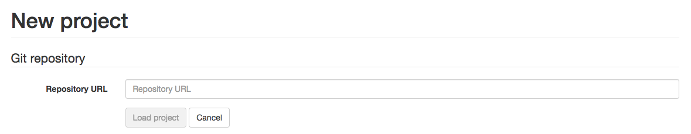
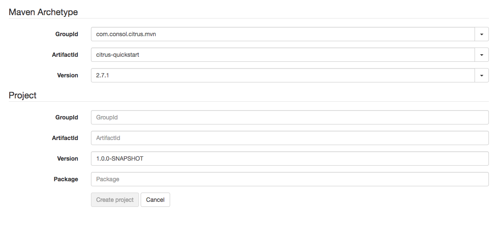
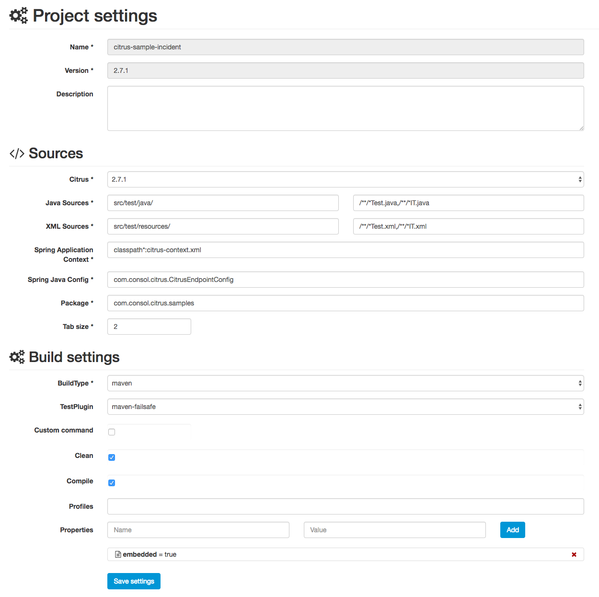
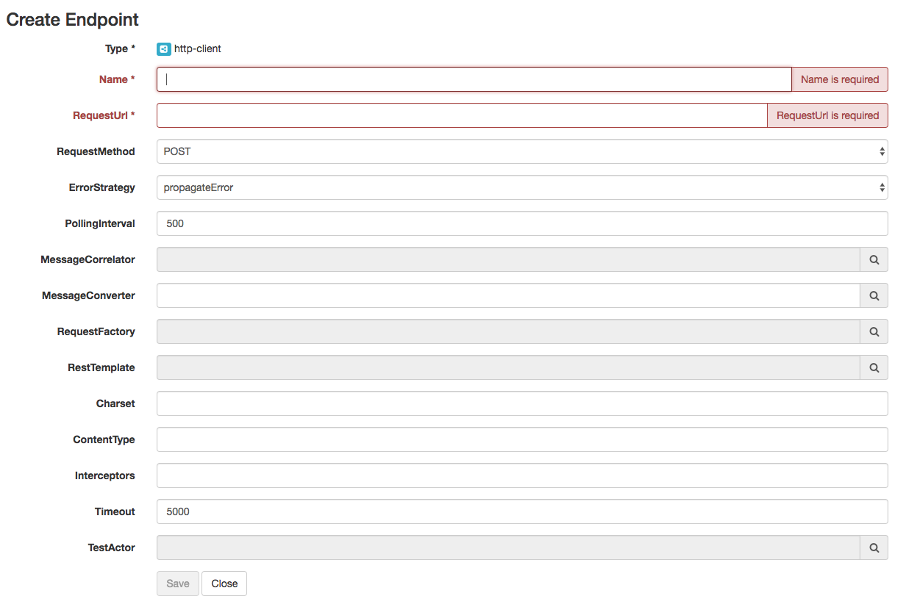
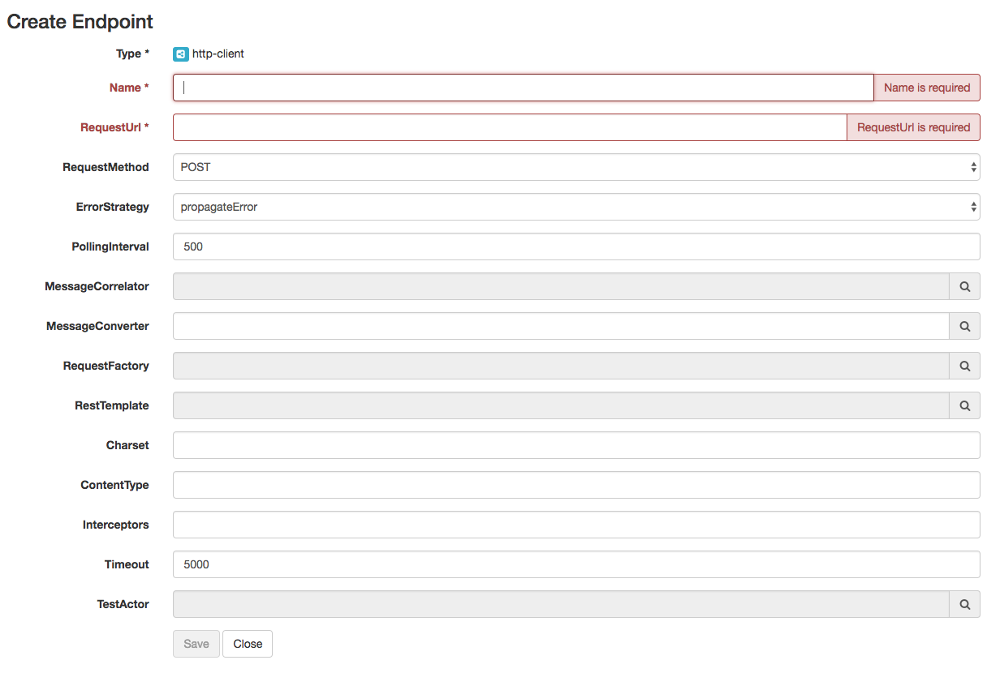
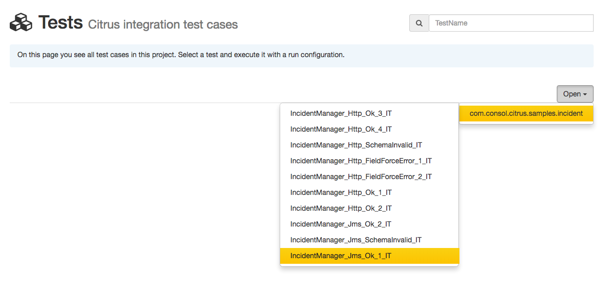
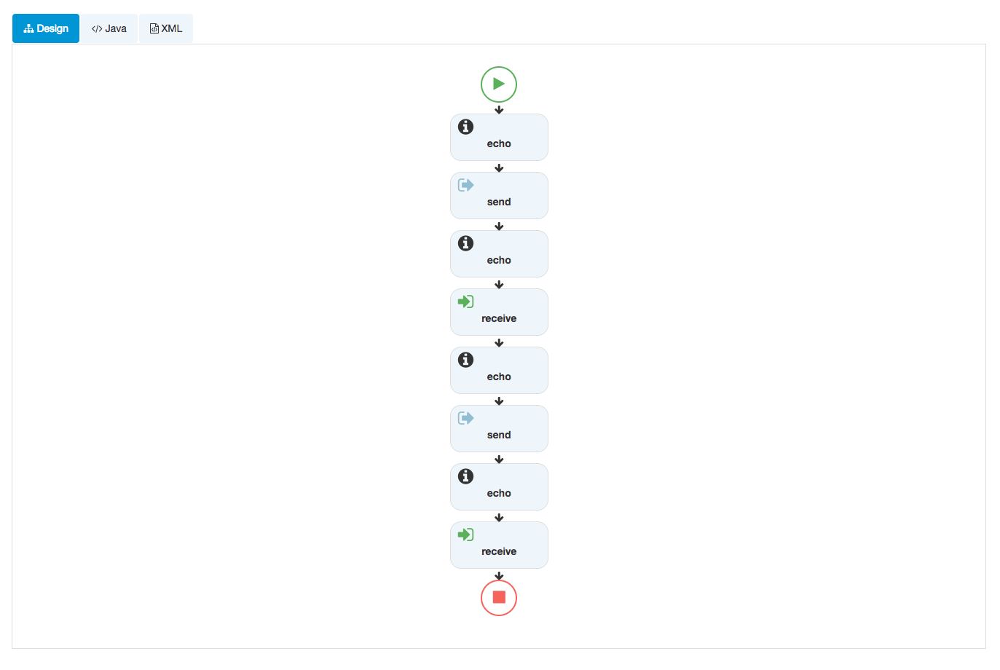

Copyright © 2017 ConSol Software GmbH

1. Introduction
This is a web administration user interface for the integration test framework Citrus www.citrusframework.org written in Angular2. Major functionality objectives are project and configuration management as well as test execution and reporting.
1.1. Features
The Citrus administration UI is there to help you manage configuration, modules and tests in your project. The user interface is able to give you a hand when it comes to managing Citrus messaging components and other configuration items such as (endpoints, validation Matcher, functions, schema repositories and so on).
The UI is browser based and is able to open and read your Citrus project. The administration pages provide access to the test cases so you can view and execute them. Of course you will also be able to review the test results. The administration web UI is not there to eliminate your favorite IDE (IntelliJ, Eclipse or whatever)! The UI is a helping instrument for getting in touch with Citrus and its concepts and works side by side with your local Java IDE as well as other text editors of your choice.
Also the UI is helpful when executing the Citrus integration tests in different stages (test, acceptance, explorative) of your release process. There is not always a full capable development environment available for executing integration tests. You can run the Citrus administrative UI as Docker container or Kubernetes pod in order to make the tests portable to your containerized test environment.
Now lets have a quick look at the feature set.
1.2. Limitations
NOTE: This project is still still under construction!
The administration UI is stable not yet finished. Some features are still under construction. Some aspects are simply not covered yet.
Following from that we have to deal with some limitations and trade offs until the project emerges (hopefully with the help of the community, keeping our fingers crossed!). However the administration UI is usable and most features are considered to be stable.
Please consider following limitations that we have right now:
1.2.1. Java 8
The administration UI is implemented using Java 8. You need at least Java 8 runtime in order to run the Citrus admin web application on your machine.
1.2.2. Maven
At the moment we are limited to Citrus projects using Maven as build tool. Gradle projects are currently not supported. The build tool used is quite important as the administration UI is reading the build information and uses Maven to execute test cases. We are working on Gradle support, please stay tuned and maybe poke us when things are not evolving.
1.2.3. Version
Your project should use Citrus version 2.6 or higher in order to be able to work with the administration UI. Earlier Citrus versions might work too but are not tested and will not get support with bugfixes.
In addition to that we expect you to use the Citrus annotations when declaring test methods. The administration UI is looking fo all tests in your project. It is required that you use @CitrusTest and @CitrusXmlTest annotations on your test methods. Otherwise the test cases will not be found and displayed.
1.2.4. Browsers
At this early state we do not support browsers other than Chrome. This does not mean that other browsers are not working with the administration UI but the features are not tested yet with other browsers. The Citrus development team is using Chrome so you can be sure that errors related to browser incompatibility will be fixed very soon for Chrome.
1.2.5. Java DSL
Citrus provides both XML and Java DSL for writing test cases. The administration UI is definitely able to read your XML test cases. The UI should also be able to read and manage your Java DSL test cases but there might be some limitations when reading your Java DSL code especially when you use object marshalling/unmarshalling as well as highly customized methods.
Please be curious and find out weather the current UI state is working with your project. And please let us know when there is something wrong.
2. Installation
The Citrus administration UI is a web application that uses Spring boot and Angular2. First of all download the latest distribution which is a Java WAR file located at labs.consol.de/maven/repository:
curl -o citrus-admin.war https://labs.consol.de/maven/repository/com/consol/citrus/citrus-admin-web/1.0.0/citrus-admin-web-1.0.0-executable.warSave the Java web archive to a folder on your local machine and start the Spring boot web application. The downloaded artifact should be executable from command line like this:
java -jar citrus-admin.warYou will see the application starting up. Usually you will see some console log output. The web server should start within seconds. Once the application is up and running you can open your browser and point to http://localhost:8080.
That’s it you are ready to use the Citrus administration UI. Next thing to do is to create or open a project.

3. Project
The basic objective of the administration UI is to manage your Citrus projects. The UI is able to open your project in order to view and edit your project configuration as well as your test cases.
3.1. New project
New projects are created in the admin UI working directory. By default this is the user home directory. You can change the working directory location by setting a system property or environment variable (citrus.admin.working.directory | CITRUS_ADMIN_WORKING_DIRECTORY).

3.1.1. Git clone
The administration UI is able to create new Citrus projects. The first approach would be to load the project sources from a Git repository. This repository should contain the Citrus project sources exclusively. Just give the repository URL and the UI will try to load the sources to your local file system. This is done either by git clone command (if the git binaries are available). As a fallback from that clone the UI will load the zipped project from git and unpack it on the local file system.

3.2. Open project
You can open any Citrus project. The only prerequisite is that you have access to the project home on your local machine. When the administration UI is started you have to open a project first.

The project home selection form is displayed automatically when no project has been selected yet. You can preselect a project home when starting the administration UI by setting a system environment variable at startup:
java -Dcitrus.admin.project.home=/Users/myaccount/path/tp/citrus/project/home -jar citrus-admin-web-1.0.0.warWhen pre selecting a project home the project is opened automatically and the project dashboard is displayed. Now back to the project home selection if no project has bee pre selected yet.
You need to specify the project home which is the root directory of your Citrus project. You can specify the complete path manually or pick the home directory over the file browser.

Once you have specified the project home you are ready to hit the Open button. Citrus will read the project information and open the project dashboard. The administration UI is looking for several things in your project in order to gain information about the project. The files scanned are:
| Path | Description |
|---|---|
${project-home}/pom.xml |
Reads information from Maven POM |
${project-home}/src/test/resources |
Reads XML test cases |
${project-home}/src/test/resources/citrus-context.xml |
Reads Spring bean configuration |
${project-home}/src/test/java |
Reads test cases |
3.2.1. Customize settings
It is possible that your project uses a different folder layout for test resources and test sources (e.g. src/it/resources and src/it/java). Then the project open operation will fail with errors. We can fix this by customizing the project settings manually in prior to opening the project.
There are two different approaches to customizing the project settings: First of all you can use system properties when starting the administration UI application:
java -Dcitrus.admin.project.home=/Users/myaccount/path/tp/citrus/project/home -Dcitrus.admin.java.source.directory=src/it/java
-Dcitrus.admin.xml.source.directory=src/it/resources -jar citrus-admin-web-1.0.0.warYou can set the following system properties:
| Property | Description |
|---|---|
server.port |
Web server port |
citrus.admin.project.home |
Preselect project on startup |
citrus.admin.root.directory |
System root as base of all projects (default: user home directory) |
citrus.admin.working.directory |
Base directory for new projects (default: root directory) |
citrus.admin.project.repository |
Git project repository to load on startup (default: not set) |
citrus.admin.java.source.directory |
Java sources directory (default: src/test/java) |
citrus.admin.xml.source.directory |
XML test sources directory (default: src/test/resources) |
citrus.admin.spring.application.context |
Path to Spring application context file (default: src/test/resources/citrus-context.xml) |
citrus.admin.spring.java.config |
Java class holding Spring bean configurations (default: com.consol.citrus.CitrusEndpointConfig) |
citrus.admin.test.base.package |
Base package where to add new tests (default: com.consol.citrus) |
maven.home.directory |
Path to Maven home that should be used in admin UI (when not set environment variable MAVEN_HOME or M2_HOME is used as default) |
You can also use Spring boot properties, e.g. a custom server port:
java -Dserver.port=8181 -jar citrus-admin-web-1.0.0.warThe exact same properties are also available when set as environment variables:
| Environment variable | Description |
|---|---|
CITRUS_ADMIN_PROJECT_HOME |
Preselect project on startup |
CITRUS_ADMIN_ROOT_DIRECTORY |
System root as base of all projects (default: user home directory) |
CITRUS_ADMIN_WORKING_DIRECTORY |
Base directory for new projects (default: root directory) |
CITRUS_ADMIN_PROJECT_REPOSITORY |
Git project repository to load on startup (default: not set) |
CITRUS_ADMIN_JAVA_SOURCE_DIRECTORY |
Java sources directory (default: src/test/java) |
CITRUS_ADMIN_XML_SOURCE_DIRECTORY |
XML test sources directory (default: src/test/resources) |
CITRUS_ADMIN_SPRING_APPLICATION_CONTEXT |
Path to Spring application context file (default: src/test/resources/citrus-context.xml) |
CITRUS_ADMIN_SPRING_JAVA_CONFIG |
Java class holding Spring bean configurations (default: com.consol.citrus.CitrusEndpointConfig) |
CITRUS_ADMIN_TEST_BASE_PACKAGE |
Base package where to add new tests (default: com.consol.citrus) |
A second approach would be to create a project settings file in your Citrus project root directory. The project settings are stored in a file called citrus-project.json. When you open a Citrus project for the first time the administration UI creates this project settings file automatically. But now we want to create this file manually in order to set custom directories and settings prior to opening the project. The setting file uses JSON data format and looks like this:
{
"name" : "citrus-sample-project",
"description" : "",
"version" : "1.0.0",
"settings" : {
"basePackage" : "com.consol.citrus.samples",
"citrusVersion" : "2.7.2-SNAPSHOT",
"springApplicationContext" : "src/test/resources/citrus-context.xml",
"javaSrcDirectory" : "src/test/java/",
"xmlSrcDirectory" : "src/test/resources/",
"javaFilePattern" : "/**/*Test.java,/**/*IT.java",
"xmlFilePattern" : "/**/*Test.xml,/**/*IT.xml",
"useConnector" : true,
"connectorActive" : true,
"tabSize" : 2,
"build" : {
"@class" : "com.consol.citrus.admin.model.build.maven.MavenBuildConfiguration",
"type" : "maven",
"properties" : [ ],
"testPlugin" : "maven-failsafe",
"command" : null,
"profiles" : "",
"clean" : false,
"compile" : true
}
}
}So you can force the administration UI to use these settings when opening the project. Just create the citrus-project.json file in the Citrus project home directory before opening the project.
3.3. Dashboard
The dashboard gives you a quick overview of what your project looks like. Citrus reads information about your project such as name, package, description, test count, latest reports and so on.

The project dashboard is a good starting point to discover your project with all projects settings and tests.
3.4. Settings
Each Citrus project has properties and settings that influence the administration UI. These properties are project names, descriptions, versions and source folders. You can review and change these project related settings with an HTML form on the project settings page.

Some project settings are read only at the moment, e.g. we do not support renaming of projects yet. If you want to rename a project or change the project version you need to do this manually in the Maven POM configuration.
If you save the project settings the administration UI will save the changes to the project settings file citrus-project.json which is located in your project home directory. This file uses the JSON syntax and looks like follows:
{
"projectHome" : "~/Projects/Citrus/citrus-sample",
"name" : "citrus-sample-project",
"description" : "",
"version" : "1.0.0",
"settings" : {
"basePackage" : "com.consol.citrus",
"citrusVersion" : "2.6",
"springApplicationContext" : "src/it/resources/citrus-context.xml",
"javaSrcDirectory" : "src/test/java/",
"xmlSrcDirectory" : "src/test/resources/",
"javaFilePattern" : "/**/*Test.java,/**/*IT.java",
"xmlFilePattern" : "/**/*Test.xml,/**/*IT.xml",
"useConnector" : true,
"build" : {
"@class" : "com.consol.citrus.admin.model.build.maven.MavenBuildConfiguration",
"type" : "maven",
"properties" : [ ],
"testPlugin" : "maven-failsafe",
"clean" : false,
"compile" : true,
"command" : null,
"profiles" : null
}
}
}3.4.1. General
Each Citrus project works with Java classes and resources. These files are located in project folders inside the Maven project. Citrus admin is working with these defaults:
-
src/test/java/ folder for Java test classes
-
src/test/resources/ folder for test resources (e.g. configuration files)
-
/**/*Test.java,/**/*IT.java file pattern for Java test classes
-
/**/*Test.xml,/**/*IT.xml file pattern for XML test cases
You can customize these settings according to your project setup.
3.4.2. Build configuration
The administration web UI is able to execute tests. This test execution is done by calling the Maven build lifecylce for the opened project. You can adjust the build settings accordingly. By default Citrus admin uses the maven-failsafe to execute the Citrus tests. This causes Citrus to call
mvn compile integration-testThis executes all Citrus test cases. You can change this to maven-surefire so the Maven command looks like this:
mvn compile testIn case you need to activate Maven profiles during the build you need to add those profiles to the build settings. Each profile name that you save to the build settings will result in some command line argument for the Maven build like this:
mvn compile integration-test -PmyProfileAlso when some system properties should be set during the Maven build you can add those properties to the build settings, too. This results in command line arguments for the Maven command:
mvn compile integration-test -DmyProperty=valueThis is how to customize the Maven build that executes the Citrus tests in a project.
NOTE: As you can see we are not speaking about Gradle build configuration here. This is simply because it is not possible to manage Gradle projects at the moment! Stay tuned for future releases to come
3.4.3. Modules
Citrus as a framework is modular. You can add and remove Citrus capabilities by adding and removing module dependencies in your project. Usually these Citrus modules are managed as Maven dependencies in your project. The Citrus administration UI is able to manage these dependencies for you.

On the modules settings page you see all currently activated modules. And you get a list of available modules that you can add. Just check or uncheck the modules and the administration UI will automatically add/remove Maven dependencies in your project.
NOTE: This mechanism does not work with Gradle projects. Yet this is a feature to come soon hopefully!
3.4.4. Admin connector
In the previous chapter we have seen how to customize the project and build settings for the active project. Now when the administration UI executes some Citrus tests we can make use of a special connector library that provides detailed information about the test run and its outcome.
Basically this little helper library provides detailed information during the test run by pushing events to the admin UI.
The connector library is available from Maven central and is simply added as dependency to the target project. You can use the admin UI settings page for automatically adding this little helper to the target project. The automated connector setting will place the new Maven dependency to the project POM and add special test listeners to the Spring application context in your Citrus project.
Here is the connector Maven dependency that is added to the target project:
<dependency>
<groupId>com.consol.citrus</groupId>
<artifactId>citrus-admin-connector</artifactId>
<version>${citrus.admin.version}</version>
</dependency>Once this library is present for your project you can configure the special connector test listeners as Spring beans:
<bean class="com.consol.citrus.admin.connector.WebSocketPushEventListener">
<property name="host" value="localhost"/>
<property name="port" value="8080"/>
</bean>As you can see the connector is pushing message data to the administration UI using a WebSocket API on the administration UI server. The host and port properties are customizable, default values are localhost and 8080. When a test is executed the message listener will automatically connect and push messages exchanged to the administration UI.
Of course the administration UI server has to be accessible during the test run. The message listener will automatically test the server connectivity at the beginning of the test run. In case the administration UI is not accessible the message push feature is simply disabled. So you can continue to work with your Citrus project even if the administration UI is not started.
The connector will provide lots of valuable information about the running tests when activated. This is how the administration UI is able to track messages exchanged during a test run for instance. Stay tuned for more features related to the test execution and message exchange.
This way the admin UI is able to display runtime information of the tests such as exchanged messages, test results and so on.
As mentioned before you can automatically activate/deactivate the connector library in the project settings. Just explore the setting page for details. This will automatically add or remove the citrus-admin-connector Maven dependency for you.
NOTE: This mechanism does not work with Gradle projects. Yet this is a feature to come soon hopefully!
4. Configuration
The Citrus components such as endpoints, variables, functions, schemas and dictionaries are configured in a Spring application context. The administration UI is able to read and change the Citrus components configuration. Each component category is represented with a separate page in the configuration section.

4.1. Endpoint configuration
Endpoints are essential in a Citrus project. They define client and server components as well as producer and consumer for different message transports.

First of all the list of all available endpoints in the project is displayed. Each endpoint represents a message transport such as SOAP, JMS, REST, Mail, FTP and so on. You can add new endpoints using the New context menu on the right. You need to chose the endpoint type first. Then a HTML form is displayed holding the endpoint settings.
 

Click save to add the new endpoint. Citrus is working with Spring XML configuration files. This means that the new endpoint component is saved as XML Spring bean to the basic Spring application context file. Usually this is a file located in src/test/resources/citrus-context.xml in your project. After you have saved the new component you will see that a new entry has been added to this file.
You can also edit endpoint components in the administration UI. Just click an an existing endpoint component and you will see the HTML form with all the settings to this endpoint.

If you save the changes Citrus will again change the Spring bean component in the XML configuration file. You can manually review the changes made. All manual changes in the Spring application context will also affect the administration UI. Just hit the reload button in your browser to reload the configuration.
5. Tests
Managing all your tests is a basic thing to do with the administration UI. You are able to search for tests, open tests and execute tests with the UI.
You can do the following things regarding test management
5.1. Search tests
Searching for test cases is very simple. Open the tests page and you will se a search form input field at the top right.

Citrus administration UI will search for tests in your project. These includes XML and Java DSL test cases. The search is a full text search on all test names available. So the result is always a matching list of tests.
You can open the test by selecting the test from the result list.

The test is opened and displayed in test detail panel.
5.2. List tests
Your project usually contains a lot of tests. All found tests are listed by their class and method. Also you can filter the displayed tests by the Java package. Each test can be opened in a editor for exploring further test details.

5.3. Editor
The administration UI is able to open your test cases. Both XML and Java DSL test cases are supported.
NOTE: Java DSL test cases might cause some problems when loading the test design view. this is because we do have to make the Java DSL code interpretation more stable.
You can open the tests using the Open context menu. All available test cases are grouped by their package.

Choose a test and open it in order to see the basic test case information such as name, author, status and description.

Next to to the test case info you can view the test source code.

If your test uses the XML DSL to describe the test actions you can also view the XML sources.

At the moment these information is read only. Stay tuned for some code editing features that might come in the future. Another representation of the test sources is the test designer view. The design view brings the test actions to a graphical representation.
Now a very powerful feature is to execute the test using the administration UI. Let’s go and read about test execution.
5.4. Execute tests
Test execution is a very powerful feature as it enables you to execute your tests within a browser environment almost everywhere. Just hit the Run button and Citrus will start a new background process that executes the test case immediately. At the moment we do only support Maven test execution. This means that a new Maven process is launched in background executing the test.

As you can see the test log output is forwarded to your browser. Also the test progress and result (success or failure) is tracked by the administration UI. In the messages table you are able to review all messages (inbound/outbound) that were part of the test run.

The message panel displays all inbound and outbound messages. Click on the message row to see the message content details. The mechanism for tracking inbound and outbound messages during a test run is done with either the admin connector library that you need to activate in your project. If for some reason you are not able to activate the connector library in your project the administration UI will try to read the messages from the normal Citrus logging output. This of course is only working if you have logging enabled in addition to using at least with logging level DEBUG.
If non of these approaches is working for you the admin UI will not display exchanged messages after the test run.
5.5. Test designer
The next feature is quite experimental. In the test design view Citrus tries to give you a graphical representation of the test actions in your test. Each test action is displayed as a graphical node. If you enter the action with the mouse or if you click on a test action node some more details are displayed.

NOTE: The test design view is not complete for all test actions. Some actions may not be displayed or may have limited display.
5.6. Test reporting
The administration UI is able to read and parse basic TestNG and JUnit reports. Usually these reports are written after each test run to the build output directory of your project. The admin UI will automatically find those reports and display the results to you.

When a test case is failing for some reason exception and failure information will be provided.

6. Links & Further reading
-
The Citrus reference manual gives you a detailed description of all Citrus features.
-
Examples:
-
Devoxx '15 sample project with Microservices and Docker
-
JavaLand '16 sample project with Arquillian
-
ChangeLog shows the release history.
-
Contributing explains how you can contribute to this project. Pull requests are highly appreciated!